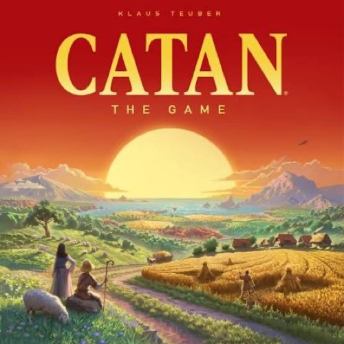
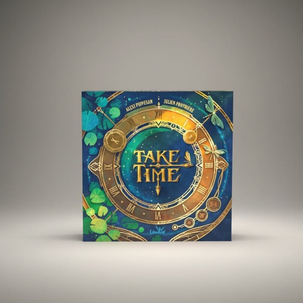

🇭🇰 新手 / 唔想睇英文規則 / 送禮
中文版
新手最常問「有冇中文版?」呢個就係答案。收錄嘅 9 個桌遊入面, 4 個有繁體中文版 (台灣繁中 / 香港繁中), 1 個有簡體中文, 4 個暫時只有英文版。中文版嘅好處係新手唔使睇英文規則, 旺角店亦大路貨。
眾豆得金
Bohnanza
牌序鎖死嘅談判遊戲
種豆、交易、收割, 賺最多金幣。手牌順序不能改變, 迫你不斷同其他玩家交易, 製造大量互動。中文版友善, 旺角店大路貨。

卡坦島
Catan
經典德式策略始祖
經典德式策略, 島上建設道路 / 村莊 / 城市。擲骰產資源、交易、發展卡、盜賊。最先 10 分贏。中文版普及, 旺角大路貨。

掌握時刻
Take Time
沉默出牌嘅合作默契
合作解謎, 時鐘圖版, 共 40 關 10 章。限制討論後沉默出牌, 考驗默契。合作向, 輸咗都唔挫敗。

L 計畫
Project L
俄羅斯方塊桌上版
Polyomino 拼圖策略 (俄羅斯方塊桌上版), 收集碎片完成 puzzle card。1-4 人友善, 單人都好玩。